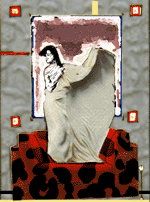

 |
Se llama Antoni Asunción; Antoni, de día, cuando trabaja de modisto y Asunción por la noche, cuando se convierte en la teniente Asunción en un bodevil de sexoteca. Ha saltado a la fama por diseñar el traje de los novios. "El
es un tipo sencillo. Me encanta cuando se aparta el pelo con la manita
esa que tiene en un gesto maravilloso....Enseguida dije que sí.
No podía dejar pasar una ocasión como esta...Básicamente
llevará un dos cuartos de pieza firme colapsado por un chaleco
de moaré biselado en las ingles, con doble puntada inglesa blanca
separada con dos hijos y talle fruncido en la traquea, acorbatada con
lana de pelmaza y unos zapatillos de cascán negros a juego." |

.